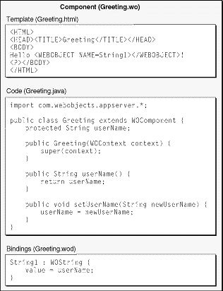
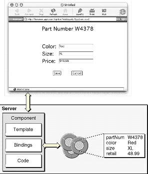

| PATH |

The following features of WebObjects ease the development of HTML-based Web applications:
These advantages are discussed in more detail in the sections that follow.
In WebObjects, a Web page is represented by a component, an object that has both content and behavior. A component can also represent a portion of a page but usually represents an entire page, so the word "page" is used interchangeably with the word "component."
Components consist of
Separating the template, code, and bindings makes it much easier to maintain a website. A graphic artist can modify a template, thus modifying the appearance of the page, without breaking the code. A programmer can completely rearrange the code without accidentally changing the layout.
You do not need to edit all three files separately. WebObjects Builder, a graphical component editing tool provided with WebObjects, edits the template, bindings, and code files simultaneously, relieving you of having to manually synchronize them. WebObjects Builder is described in more detail in "WebObjects Builder".
Figure 4-1 shows the three files in an example component.
Figure 4-1 The files of a WebObjects component
The template file in Figure 4-1 looks like any other
HTML file except for the element with the <WEBOBJECT> tag.
In this example, this tag represents a dynamic element.
Dynamic elements are basic building blocks of a WebObjects application.
They link an application's behavior with the HTML page shown in
the Web browser, and their contents are defined at runtime. A dynamic
element appears in the template as a <WEBOBJECT> tag
with a corresponding </WEBOBJECT> closing
tag. Some dynamic elements have no HTML counterpart; WORepetition
and WOConditional are examples. Table 4-1 lists some of the more
commonly used dynamic elements.
You can embed a component within another component. For example,
a component might represent only a header or footer of a page; you
can nest it inside of a component that represents the rest of the
page. A component designed to be nested within another component
is called a reusable component, shared component,
or subcomponent. Like dynamic elements, reusable components appear
in the template as a <WEBOBJECT> tag
with a corresponding </WEBOBJECT> closing
tag, allowing you to extend WebObjects' repertoire of dynamically
generated HTML elements.
The WOExtensions Framework provided with WebObjects contains many useful reusable components like tables, radio button matrices, tab panels, and collapsible content. In addition, Direct to Web provides reusable components for editing, listing, selecting, inspecting, and querying enterprise objects.
In addition to the components, each WebObjects application has a number of sessions and an application object.
A session is a period during which a particular user is accessing your application. Because users on different clients may be accessing your application at the same time, a single application may host more than one session at a time. Session objects encapsulate the state of a single session. These objects persist beyond the HTTP request-response cycles, and store (and restore) the pages of a session, the values of session variables, and any other state that components need to persist throughout a session. In addition, each session has its own copy of the components that its user has requested.
Session variables can be used in shopping cart applications to represent the items in the shopping cart. Email applications can use session variables to keep track of whether the user has logged in or not.
The application object is responsible for interfacing to an adaptor and forwarding HTTP requests to a dispatcher that, in turn, passes them to the appropriate session and component. The application object also passes the HTML response from the active component back to the adaptor. In addition, the application object manages adaptors, sessions, application resources, and components.
In HTML-based WebObjects applications (as in all WebObjects applications), the enterprise objects encapsulate the application's business logic and provide the connection with the application's databases. Since enterprise objects are objects, they can appear as variables in components, sessions, or the application object. A component's bindings file relates the component's enterprise objects to the attributes of its dynamic elements. Figure 4-2 shows how enterprise objects relate to a component in a WebObjects application.
Figure 4-2 How enterprise objects relate to a WebObjects component

© 2001 Apple Computer, Inc.